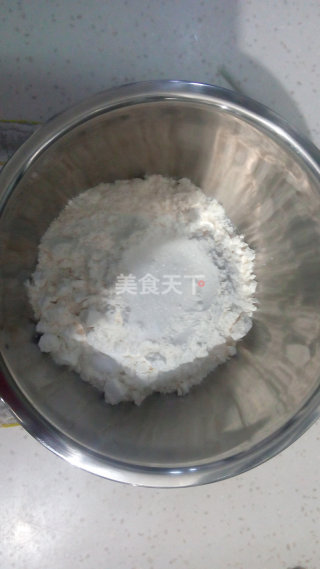
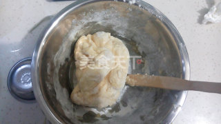
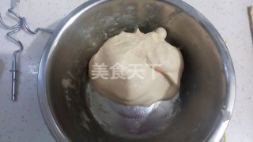
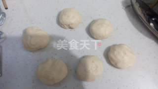
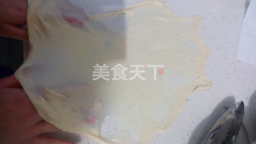
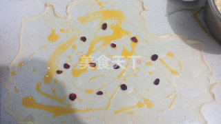

Culinary Art |
Culinary Art |
|  |  |  |
First Step: Mix the condensed milk with water and add the juice slowly into the flour mixture. Stir and stir. |
Second Step: Add the whole egg mixture, add the mixture, add the mixture, add the salad oil, and roll it into a smooth dough. |
Third Step: With electric egg beater and the hook, low-speed mixing, stirring about 3-4 min, the softened butter into small pieces, add, and continue to stir, about 3 min, until into a smooth dough, can open basic into extension stage, (making bread extension stage, with the hand can gently pull into film) with gauze cover, let stand for about 3 hours. |
|  |  |  |
Forth Step: It's a small amount of the same amount. (my pan is smaller, so the dough is smaller.) | Fifth Step: Lift the edge with your hand and draw a circular arc in the air. | Sixth Step: On the chopping board can see the decorative pattern on the table, through face and whole egg liquid, turn around to the middle fold, fold into a square, oil drain pan, oil is just full of pan, fry until golden on both sides and then in crisp, drain out, cut into small pieces, drizzle wi condensed milk, still can put on some cranberry dry, raisins, banana and so on. |